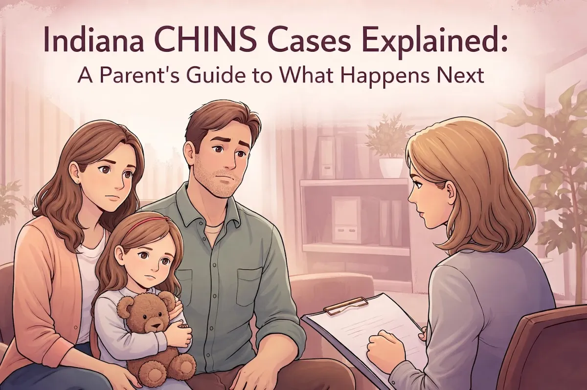
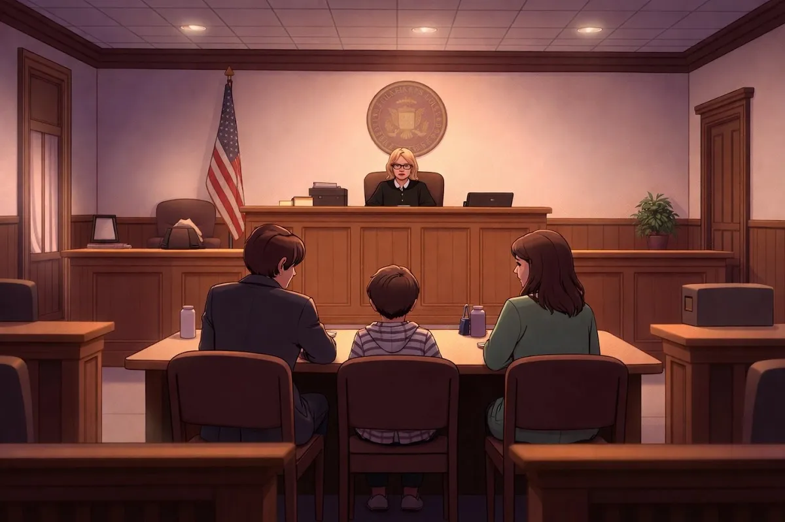

Indiana CHINS Cases Explained: A Parent's Guide to What Happens Next

Getting that knock on the door from the Department of Child Services is one of the most terrifying experiences a parent can face. If you're dealing with a CHINS case in Indiana right now, you're probably feeling scared, confused, and maybe even a little angry. That's completely normal.
Here's the thing: you don't have to figure this out alone. And understanding what's actually happening in your case can take away some of that fear. So let's break down what a CHINS case means, what happens at each step, and how you can protect your family's future.
What Does CHINS Actually Mean?
CHINS stands for "Child In Need of Services." It's a juvenile court proceeding where the State of Indiana believes a child's safety or well-being is at risk and asks the court to step in.
Now, here's what a lot of parents don't realize: a CHINS case isn't a criminal case against you. It's a civil proceeding focused on the child. But that doesn't mean it's not serious. The outcome of a CHINS case can affect where your child lives, what services you're required to complete, and ultimately, your parental rights.
For families in North Vernon, Jennings County, and surrounding communities like Vernon, Commiskey, Hayden, and Scipio, these cases are handled in the Jennings Circuit Court. Having an attorney in Vernon, Indiana who knows the local court system can make a real difference in how your case goes.
How Does a CHINS Case Start?
It usually begins when someone makes a report to DCS about possible abuse or neglect. DCS then investigates. Within 24 hours of receiving that report, they create what's called a "310 report", basically a written assessment of the situation.
If DCS decides the situation requires court involvement, they file a CHINS petition. This document lays out the specific allegations against you and explains why they believe your child needs court protection.
Before the petition moves forward, a judge has to find "probable cause" that a CHINS situation exists. Think of it as the court agreeing there's enough evidence to take a closer look.
The Initial Hearing: What to Expect
Once DCS files the petition, you'll receive written notice telling you:
What the allegations are
When your initial hearing is scheduled
Your rights in the case
And here's something important: you have rights. You have the right to an attorney, and if you can't afford one, the court will appoint one for you. You also have the right to present witnesses and cross-examine anyone who testifies against you.
At the initial hearing, the judge will explain the allegations, and you'll need to enter a plea. You can either:
Admit the allegations (meaning you agree they're true)
Deny the allegations (meaning you dispute them)
This is a big decision, and it's one you shouldn't make without talking to a lawyer first. What you say at this hearing matters.
What Happens If Your Child Is Removed?
If DCS has already removed your child from your home, you're entitled to a detention hearing within 48 hours. This hearing often happens at the same time as your initial hearing.
At the detention hearing, the judge decides whether your child can come home while the case continues or whether they need to stay somewhere else temporarily. The judge will look at things like:
The safety concerns DCS raised
Whether there are relatives who can care for your child
What's in the best interest of the child
This is an emotional moment for any parent. Having someone in your corner who listens to what you have to say and can present your side clearly to the judge is invaluable.

The Fact-Finding Hearing
If you deny the allegations at your initial hearing, the case moves to a fact-finding hearing. This is basically a trial, but there's no jury: just a judge who hears the evidence and makes the decision.
Here's what you need to know:
The fact-finding hearing must happen within 60 days of the CHINS petition being filed (though it can be extended another 60 days if everyone agrees)
DCS has to prove their case by a "preponderance of the evidence": meaning they need to show it's more likely than not that their allegations are true
You can present your own evidence and cross-examine DCS's witnesses
This hearing is your chance to tell your side of the story. A good attorney will help you prepare, gather evidence, and present the strongest possible case.
The Dispositional Hearing
If the court finds the allegations are true (either because you admitted them or because DCS proved them at the fact-finding hearing), the next step is a dispositional hearing. This must happen within 30 days of the fact-finding decision. If it doesn't, the court has to dismiss the case.
At the dispositional hearing, the judge decides what happens next. This might include:
Ordering you to complete certain programs or services (like parenting classes, counseling, or substance abuse treatment)
Issuing protective orders or no-contact orders
Setting up a case plan for reunification with your child
The goal here, and this is important to remember, is usually reunification. DCS and the court want to see families stay together when it's safe to do so. The services they order are meant to address whatever concerns led to the case in the first place.
Ongoing Review Hearings
A CHINS case doesn't end after the dispositional hearing. The court holds review hearings to check on progress. These happen at least every six months, though they can be more frequent.
At each review hearing, DCS provides a progress report (you should receive this at least 7 days before the hearing). The judge looks at:
Whether you're completing your case plan
How your child is doing
Whether circumstances have changed
You have the right to be heard at every single one of these hearings. You can provide written statements, give oral testimony, and cross-examine witnesses. If your circumstances change significantly, you can also request a modification hearing.
Your Rights Throughout the Process
Let's recap, because this is crucial:
Right to an attorney (one will be appointed if you can't afford one)
Right to written notice of all allegations and hearings
Right to present evidence and call witnesses
Right to cross-examine witnesses who testify against you
Right to be heard at every hearing
The standard of proof in CHINS cases is "preponderance of the evidence": not the higher "beyond a reasonable doubt" standard used in criminal cases. That means DCS doesn't have to prove their case perfectly. They just have to show it's more likely true than not.
Why a Local Attorney Makes a Difference
When you're going through something this stressful, you need someone who actually listens. Someone who takes the time to understand your situation and gives you real options: not just legal jargon that leaves you more confused than when you started.
As a small town lawyer serving Jennings County and the surrounding communities, Chris Doran wears many hats and handles a wide variety of complex legal matters. But at the end of the day, it comes down to one thing: helping local families solve their legal problems in a way that makes sense for their lives.
If you're looking for an attorney in Vernon, Indiana who will sit down with you, hear your story, and help you understand what's really going on in your case, that's exactly what you'll find at Chris Doran Law LLC.
Take the Next Step
A CHINS case is serious, but it's not hopeless. Parents successfully navigate these cases every day. They complete their case plans, make the changes the court asks for, and reunify with their children.
The key is understanding the process, knowing your rights, and having someone in your corner who can guide you through each step.
If you're facing a CHINS case in North Vernon, Jennings County, or anywhere in the surrounding area, reach out to Chris Doran Law LLC. Sometimes just having someone who listens and explains things clearly can make all the difference in the world.